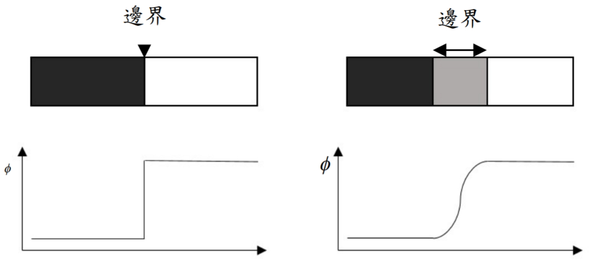
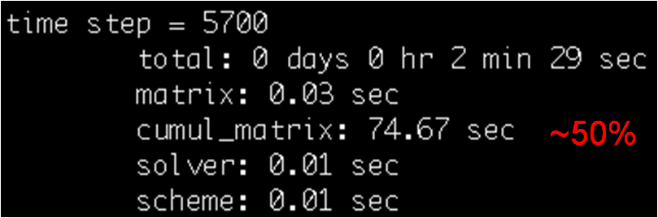
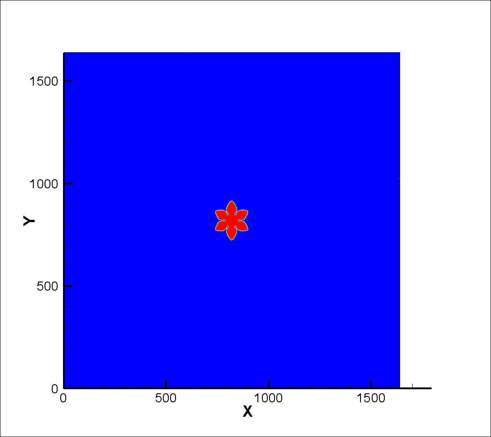
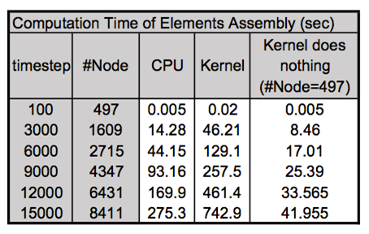
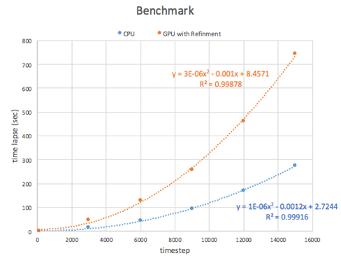

團隊成員

任精瑋
李珩

研究背景
冷凍鑄造法是仿生多孔材料的熱門製程，藉此產生具有優異性質的材料。其概念是將陶瓷懸浮液冷凍，以冰晶作為鑄模，藉由冰晶的生長推開懸浮液中的粉體，構成複雜的微結構。最終將冰晶昇華，燒結粉體得仿生多孔材料。而調整製程中的參數，如溫度梯度、漿料濃度、冷凍速度，可以產生不同的微結構，也就能得到不同的材料性質。
為研究製程參數對於微結構之影響，需以模擬代替耗時的製程。陳俊杉教授的研究團隊過去成功的以相場法結合二元金屬模型，推導出冷凍鑄造法之模型，並以有限元素法實作。最後與實驗對照，展現出相同的趨勢，也證實了該模型的準確性。
模擬成果與實驗比較

相場法概念示意圖
方法簡介
相場法最主要的概念，是將兩相(如固體及液體)不連續的邊界(寬度為零的邊)，改成以一連續的函數來描述(寬度極小)，藉此處理不連續的問題。本研究中以 1(固體) 及 -1(液體) 來表達兩相，中間的值則代表邊界。
有限元素法則是解微分方程式的弱形式(weak form)，降低解對於連續性的要求，以網格(mesh)將連續的場域分割為數個元素(element)，將元素中的資料儲存於節點(node)，集結(assembly)為系統矩陣，最終解得所需之值


右圖為有限元素法的mesh，左圖為相對應的冰晶圖
有限元素法在處理複雜的結構時，需要進行大量的運算，冷凍鑄造法模型以單核心CPU運算時，一次完整的模擬可能需要數週甚至數個月的時間。本次計畫即希望透過程式優化及GPU加速，大幅降低模擬的時間，以利於研究的進行。
為加快有限元素法的模擬過程，我們針對最耗時的兩個步驟加速。最耗時的是元素的集合(Assembly)，在有限元素法中，整個場域會被分隔為數萬個元素，計算完各個元素的資料後，需要再將所有元素的資料加進一代表系統的矩陣。
CPU原程式架構
1. Initialization - 初始化場域
2. Mesh Refinement - 依據相場狀態調整網格精細程度，以減少計算量
3. Element Assembly - 計算各元素資料並集結於系統矩陣，為本計畫中著手進行GPU優化的部分
4. Solve - 由系統矩陣解得場域狀態

從上圖可以看出，處理矩陣(matrix)的集結(assembly)，花了約一半的時間，且其行為適合作平行，因此我們判斷這是最適合著手進行優化的地方。
CUDA平行化程式分支
將原先CPU版本的Assembly改為GPU版本，對照到原code，就是把findmatrix改寫成cu_findmatrix及cu_element，其餘相關內容也都以cu_開頭命名。於CPU本版中，這個步驟是由一迴圈掃過所有元素，並依次計算其數值，再分配至系統矩陣中。在GPU版本中，我們把這個迴圈改寫至kernal，以期降低整體的計算時間。
實作問題及處理結果
1. atomicAdd運算速度較慢
為避免使用atomicAdd，我們先記錄應相加數值之index及該值，後續再把同index之數值相加，但實作完成後實測的結果並不比atomicAdd快多少。
2. 系統矩陣過大無法存在device記憶體
原先有限元素法中，系統矩陣是由節點編號為主做儲存，其大小為node size * node size，若將其完整儲存於GPU記憶體中會導致bus error，但事實上中間很多0的資料是運算過程不會動到的。因此我們改以元素為導向儲存其資料，後續再由CPU轉為sparseMatri。最終其大小上限約為 64 * node size(實際上為element size，但其大小必小於node size)，有效改善了記憶體儲存的問題。
左圖是CPU第63000部的成果，右圖則是GPU第63000步的成果。這兩者大致一樣但在分支上有差異，這在過去的實驗及模擬中都是可以觀察到的現象，因冰晶分支在生長過程會不斷的擠壓彼此的空間，在初期空間有限時更嚴重，而長到後期其趨勢則會比較規律，因此雖來不及跑完完整模擬，我們還是判斷該成果合理。
先確認成果合理後，下一步比較兩版本之運算速度。
上圖是兩版本整理出的表，呈現了跌代次數、節點數、累計花費時間的結果，比較發現GPU版還是明顯比CPU版慢。
右圖是兩版本跌代步數及累積時間的XY曲線圖，兩者曲線大致上皆呈二次曲線。理論上因為元素所做的工作已分散到各個thread，GPU的曲線應該要少CPU版本少一次方，但實際做出來的曲線次方卻相等。測試過純粹傳遞資料不進行計算的案例，發現assembly仍佔了一半的時間，因此推測可能是因單一thread需接受較大量的資料，最後需要等候資料回傳同步，導致程式效率不彰。

CPU版及GPU版花費時間比較圖